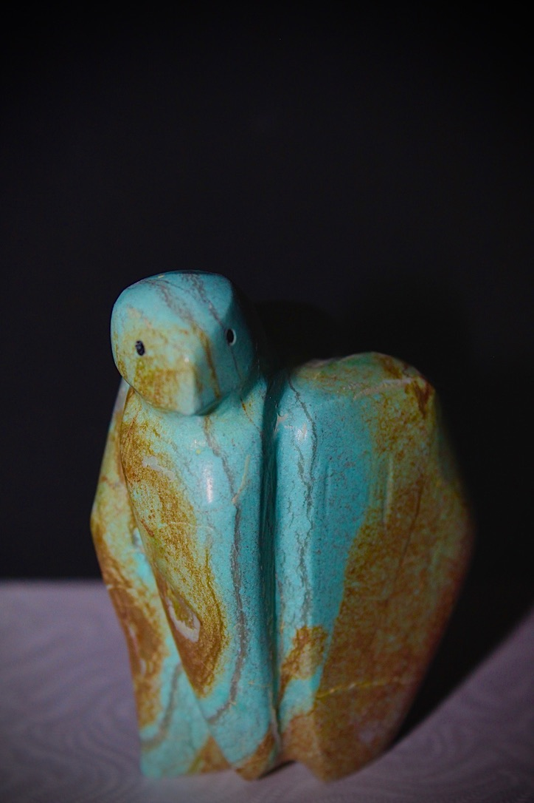
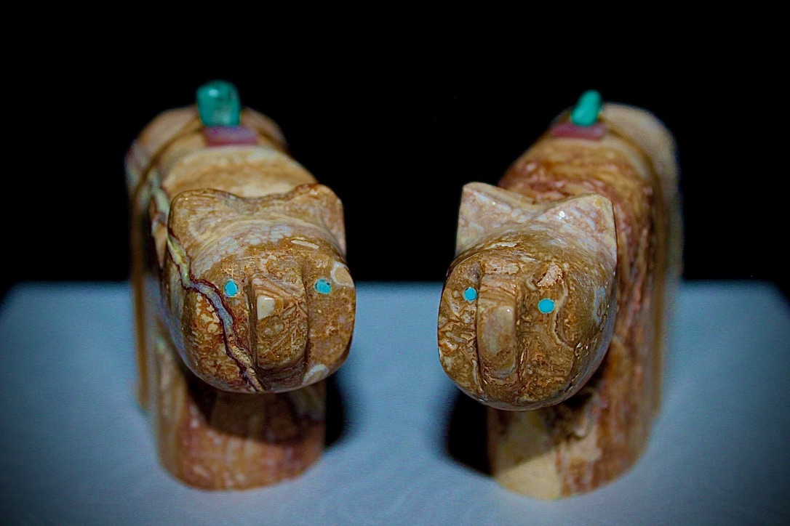
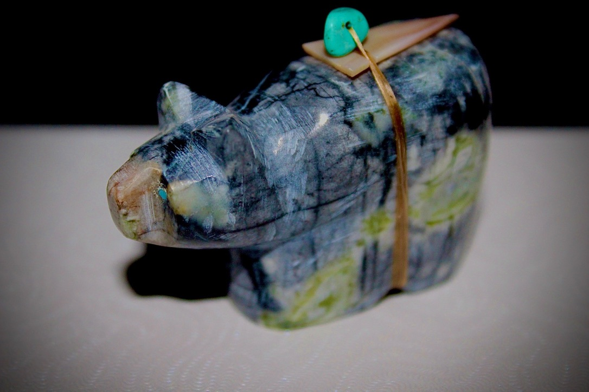

A closer look at my work.
Carving has been part of my life since I was 11. Here, I share my artwork and the details that make each piece individual.

Turquoise Eagle
An eagle carved from turquoise, with blue-green color and golden-brown markings across its head, wings, and body.

Bear Pair
Two bears with warm brown and cream markings and bright blue eyes, displayed side by side.

Bear Carving
A bear with gray, cream, and green markings, with a cord and blue-green bead across its back.